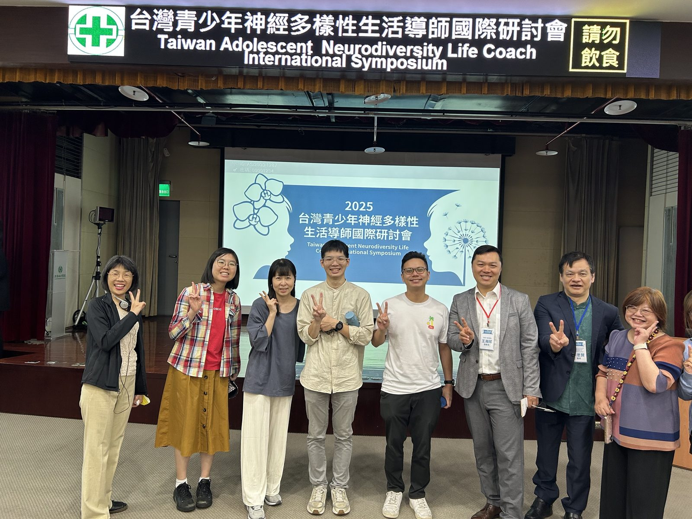
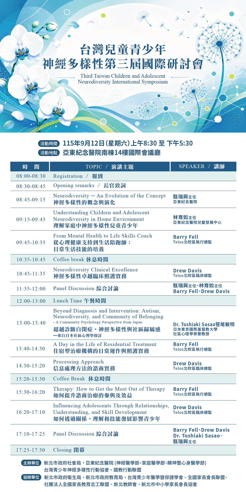

台灣兒童青少年神經多樣性
第三屆國際研討會
Third Taiwan Children and Adolescent Neurodiversity International Symposium
新北市政府社會局
台灣青少年神經多樣性行動協會
國教行動聯盟
本屆主辦單位・自 2025 年起持續參與
生活陪跑師 · 成人轉銜

孩子不是不努力，是節奏不同
當孩子在學習、人際互動、情緒調節或生活適應上展現不同的節奏， 他需要的，往往不只是一個診斷名稱——而是身邊的大人真正理解他的方式。 注意力的困難常被讀成「不專心」，情緒調節的困難被讀成「不受教」——差異是真實的，理解卻常常遲到：
好消息是：理解與支持，是可以學的。這一天，台、美、日專家把多年實務濃縮成家長與老師帶得走的方法—— 如何讓諮商真的有效、如何把治療室裡的進步變成教室與家裡的日常、如何陪孩子從兒童一路走到成人生活。
也要說清楚：談神經多樣性，不是否定診斷與治療。診斷幫助我們看見孩子的需求，專業醫療仍然重要； 神經多樣性補上的是後半段——診斷之後，孩子每一天的生活如何被理解、被接住。這正是「生活陪跑師」的意義：串聯治療、家庭與實際生活。
從「看見不同」到「接住不同」
國教行動聯盟持續推動神經多樣性倡議：2025 年召開正名記者會，獲三黨立委出席表態支持， 呼籲以「神經多樣性」取代污名化標籤；同年公布神經多樣性社會理解度調查—— 回收 1,089 份問卷中，約九成支持正名，但能正確理解其基本內涵者不到一成。理解的落差，正是孩子在家庭與校園中被誤解的距離。
今年，國教盟以主辦單位身分，與新北市政府社會局、亞東紀念醫院、台灣青少年神經多樣性行動協會 共同舉辦第三屆國際研討會，聚焦家庭理解、臨床照護、社區心理、生活技能與成人轉銜——並引進美國 Telos 與日本社區心理學經驗， 探討「生活陪跑師」：連結專業介入與日常生活的橋樑。誠摯邀請家長、教師與第一線工作者一同參與。
※ 研討會脈絡：2024 台灣青少年情緒障礙國際研討會（聚焦連續照護與住宿型治療）→ 2025 台灣青少年神經多樣性生活導師國際研討會（「制度如何接住孩子」）→ 2026 第三屆（擴大至家庭理解、臨床照護、社區心理、生活技能、有效教養及成人轉銜）。
困難是真的，解方也是
9 月 12 日 · 星期六
9 場專題演講 + 2 場綜合討論誠摯邀請家長、教師與第一線工作者
一同參與
2026 年 9 月 12 日（六）08:30–17:30，亞東紀念醫院南棟 14 樓國際會議廳。全程免費，名額 300 人、額滿為止；可申請護理、諮商心理、臨床心理、社工等繼續教育學分（欲申請者請於 Accupass 報名時填寫相關資訊，以主辦方公告為準）。報名成功後持 Accupass App 票券入場。
前往 Accupass 報名 →主辦與協辦單位
19 個機構 · 政府 · 醫療 · 民間團體主辦單位
協辦單位（15 個機構）
- 新北市政府衛生局
- 新北市政府教育局
- 台灣青少年醫學暨保健學會
- 臺灣輔助醫學醫學會
- 臺灣心理治療學會
- 全國家長會長聯盟
- 社團法人全國家長教育志工聯盟
- 社團法人新北市教師會
- 新北市中小學家長會長協會
- 社團法人中華民國社會工作師公會全國聯合會
- 家庭韌性行動聯盟
- 任林教育基金會
- 台灣全國媽媽護家護兒聯盟
- 臺灣兒童早期療育福利協會
- 中華育幼機構兒童關懷協會（CCSA）
完整議程海報
Full Agenda Poster
海報原圖：開啟完整尺寸 →